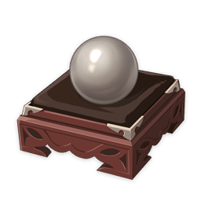

Materials
Mist Veiled Gold Elixir
Mist Veiled Gold Elixir
Trophies
4★
Weapon Ascension Material
Weapon Ascension Material.
Elixirs are in fact pills made from metal alloys. They were created by the adepti, and are able to grant weapons transcendent powers. However, they are rarely seen in the world due to the hubris of the practitioners of martial arts, who prized the ways of combat over the paths of the adepti.
Sources:
Crafted
Domain of Forgery: Thundering Ruins (Tuesday/Friday/Sunday)